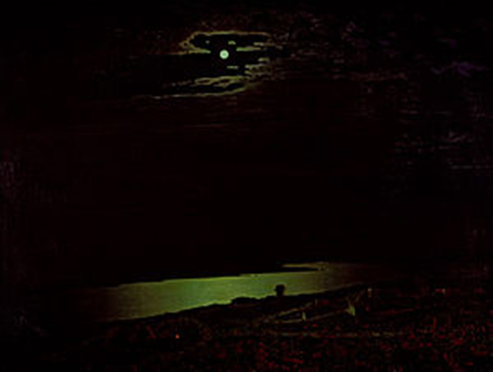

Der Kunstmanager des 19. Jahrhunderts
...Erstens, und dieses Thema ist auch heutzutage besonders aktuell und wirklich wichtig: Arkhip Iwanowitsch Kuindschi ist ein Ukrainischer Maler!
Zweitens, seine Figur in der Kunst müssen wir als die eines der strahlendsten Genies im Genre der Landschaftsmalerei betrachten... Jedes seiner Werke spricht zu uns mit dem wahren Geist der Natur, der Philosophie der Natur.
Drittens, ein talentierter Mensch ist, wie man sagt, in allem talentiert, deshalb könnte Arkhip Kuindschi heutzutage auch ein erfolgreicher Kunstmanager, Promoter, Produzent sein... und die Geschichte des Gemäldes „Mondnacht am Dnepr“ bestätigt dies in höchstem Maße.
Zuvor hatte niemand jemals die gesamte (!) schillernde Gesellschaft mit Intrigen in den Bann gezogen: Ästheten, Kollegen, Beamte, Gaffer, Kunstkenner.
Das Geheimnis eines Bildes
Zuvor hatte niemand jemals eine solch ungewöhnliche Ausstellung – eine Mono-Ausstellung – veranstaltet.
Nur dieses Gemälde.
Die Fenster waren drapiert.
Das Licht war auf es gerichtet.
Und es – strahlt!
Genau dieser einzigartige, zauberhafte Schein, der gleichzeitig von der überwältigenden Stille der ukrainischen Nacht und einer solchen 'Gogol-Mystik' erfüllt ist, wurde zum Haupträtsel für den Betrachter. Um dieses Rätsel zu lösen, das Geheimnis des 'Kuindschi-Mondscheins' zu erkennen, kamen 13.000 Besucher! Eine unglaubliche Zahl für das 19. Jahrhundert! Die Menschenmenge war fantastisch!
Die Leute achteten streng auf die Einhaltung der Warteschlange (na klar…) und auf die begrenzte Verweildauer vor der Leinwand. Es wurde ein gewisses 'Timing' festgelegt, um die Besonderheiten der modernen Sprache, Mode und Kultur zu nutzen…
Und diejenigen, die es schließlich vor das Gemälde schafften, kniffen angesichts dieses Schimmerns, dieses holografischen Effekts, buchstäblich die Augen zusammen.
Und die Gerüchte schwirrten und verbreiteten sich:
- Die Skeptiker sagten: „Das ist Schwindel, Betrug! Das Gemälde wurde auf Glas gemalt. Hinter der Leinwand befindet sich eine Laterne!“
- Die Mystiker betonten: „Das ist Zauberei, Magie! Das Gemälde wurde mit Mondfarbe auf Perlmuttbasis geschaffen!“
- Die Wissenschaftler bestanden darauf: „Das ist wissenschaftlicher Fortschritt, das Ergebnis chemischer Experimente“! (weil sie von Kuindschis Freundschaft mit Mendelejew wussten).
Auf jeden Fall schwieg niemand! Hier ist sie – die „Macht der PR“ multipliziert mit der „Macht der Kunst“!
Heute ist bereits gewiss, wie Kuindschi dies gemacht hat. Es gibt eine ganze Liste progressiver, innovativer, experimenteller Techniken und Methoden. Zum Beispiel war einer der Inhaltsstoffe, die der Maler den Farben beigefügt hat, Bitumen – ein Bestandteil moderner Asphaltbeläge...
Aber! Keine noch so perfekte Kunststudie kann eine Antwort geben, nicht darauf, wie, sondern warum. Warum ist das ein wahres Meisterwerk?
Arkhip Kuindschi, „Mondnacht am Dnepr“

Und die Musik wird uns bei unseren Überlegungen helfen.
„Stanislaw Ljudkewytsch ist eine Epochenfigur !“, nicht nur weil es ihm bestimmt war, seinen 100. Geburtstag zu feiern, sondern auch im Sinne seiner Bedeutung in der Geschichte der Musikkunst der Ukraine.
Unter den Werken des Komponisten war und bleibt „Altes Lied“ eine besondere Seite. Einfach und ergreifend singt es ohne Worte von etwas sehr Vertrautem, Gemütlichem, Verständlichem, das dem Herzen nahe ist. Es besingt in jeder Note Zärtlichkeit, Ruhe und Wärme.